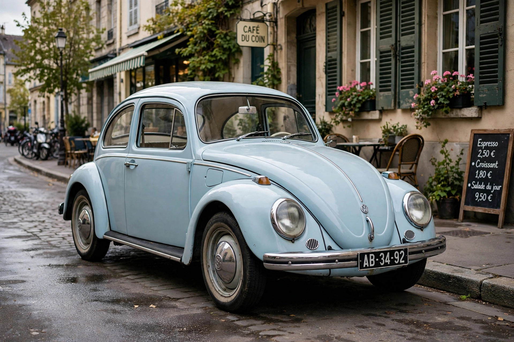

Volkswagen
From Wikipedia, the free encyclopedia

A classic VW Beetle.Volkswagen (\'people\'s car\' in German) is a German automobile manufacturer founded in 1937 under the Nazi regime to build a cheap family car — the Beetle — and headquartered in Wolfsburg. After the Second World War, under British administration and then Heinz Nordhoff, the Beetle became a global icon, and Volkswagen grew into Europe\'s largest automaker, parent of the Volkswagen Group (Audi, Porsche, Škoda, SEAT/Cupra, Bentley, Lamborghini and more).
Origins and Beetle
Ferdinand Porsche designed the KdF-Wagen to Adolf Hitler\'s brief; the Wolfsburg factory was built in 1938, but war intervened. Production truly began in 1945 under Major Ivan Hirst of the British Army. The Beetle (officially Type 1) sold over 21 million by 2003 — the longest-running, most-produced single platform — and the Type 2 \'Kombi\' van became a counterculture symbol.
Growth and Golf
The front-wheel-drive, water-cooled Golf (1974) succeeded the Beetle as the company\'s core car, spawning the GTI \'hot hatch\' in 1976. Acquisitions built the modern group, and the MQB platform strategy (2012) underpins millions of cars across brands. China became VW\'s largest market.
Dieselgate and electrification
In 2015 the US EPA revealed that VW diesel cars used defeat devices to cheat emissions tests; the scandal cost the company over €35 billion and accelerated its pivot to electric vehicles (ID. family, MEB platform) and a vast battery programme, alongside reputational repair.